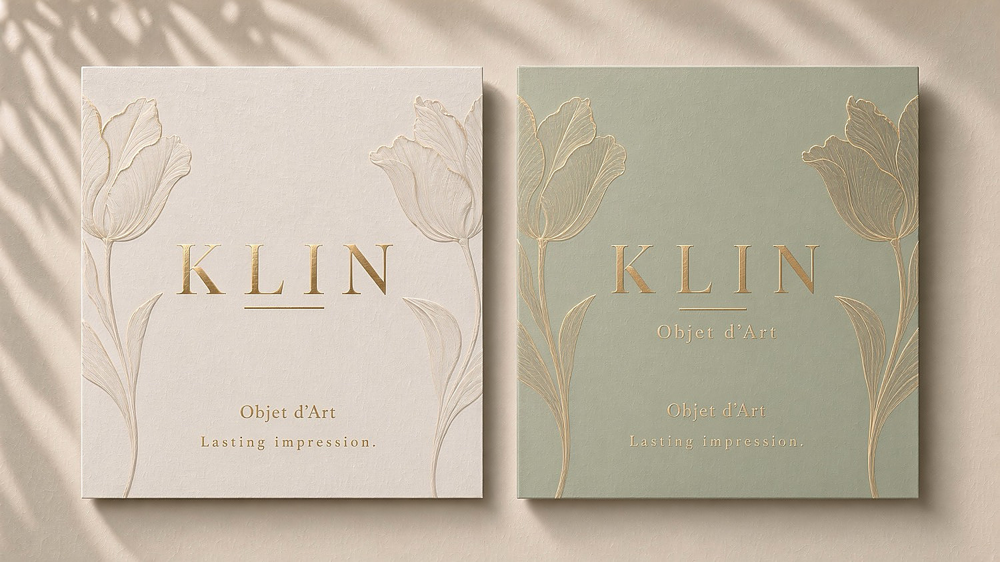
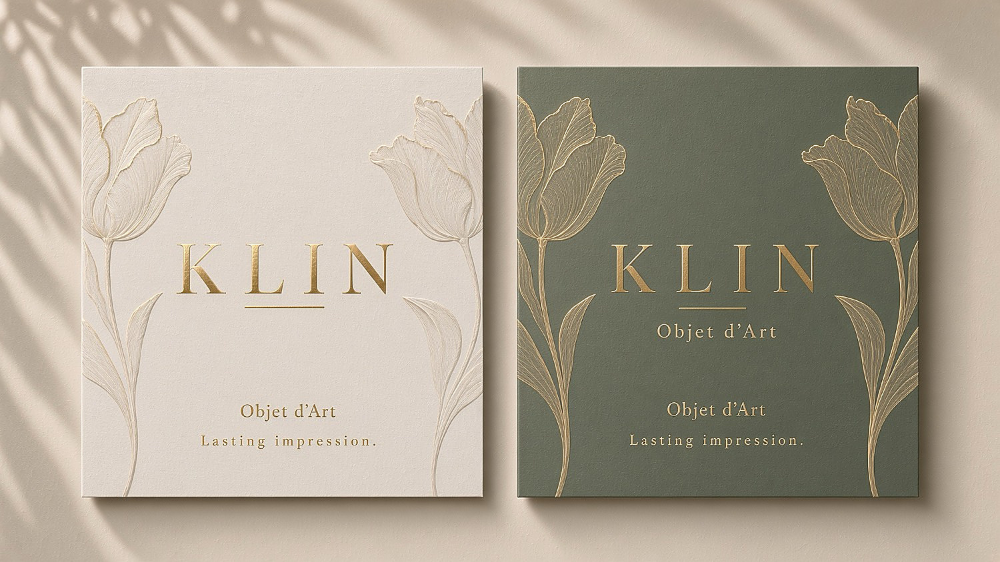
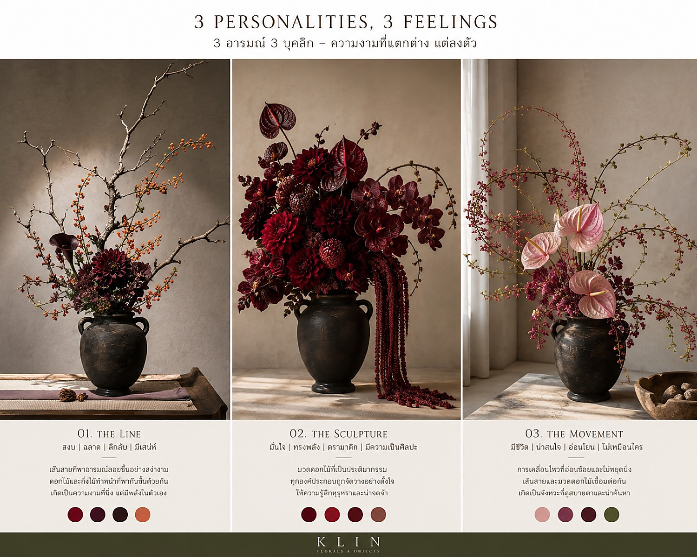
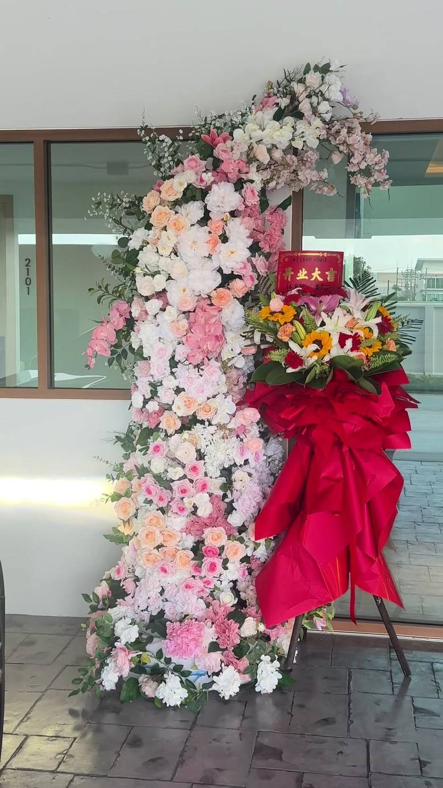

01
The Line
เส้นบางของการ์ดและป้าย — สีขาวกับเสจ ดอกไม้เป็นรายละเอียด ไม่ใช่ตัวนำ
Lasting impression.
บ้านศิลปะของดอกไม้และวัตถุที่อยู่ได้นานกว่าวันส่งมอบ — atelier objects ที่ถือใกล้ตัว และ maison installations ที่ตั้งอยู่ในพื้นที่จริง ทุกชิ้นถูกจัดให้เหลือเฉพาะเส้น สี และความรู้สึกที่อยากให้จำ


ของในห้องอาเทลิเย่ไม่ได้เร่งให้ดูใหญ่ มันถูกออกแบบให้จับได้ เขียนได้ และเก็บไว้ได้ — การ์ด ป้ายแขวน กล่องหน้าต่าง และตู้กระจกเล็ก ๆ

ฝาเสจ ริบบิ้นทองจารึก KLIN ป้าย Lasting Impression ห้อยตรงกลางช่อขาว

กุหลาบขาวในกรอบเสจ พร้อมป้าย Flora Atelier

ฝาซ้ายเป็นแผ่นเปล่า ช่อครีม-ฟ้าอ่อนนั่งบนฐานงาช้าง

ป้ายสองหน้า รูร้อยกึ่งกลาง เส้นเขียนข้อความด้านหลัง

ลายทิวลิปทองเส้นบาง วางเป็นชุดกับคู่แรก
สามความรู้สึกของบ้านเดียวกัน ไม่ใช่สามแบรนด์

เส้นบางของการ์ดและป้าย — สีขาวกับเสจ ดอกไม้เป็นรายละเอียด ไม่ใช่ตัวนำ
ช่อและกล่องที่ตั้งได้เหมือนวัตถุ — กล่องหน้าต่าง ตู้กระจก ถุงที่ถือแล้วจำรูปได้
งานติดตั้งที่เดินผ่านได้ — ซุ้ม เสา กรอบประตู และแจกันในล็อบบี้
Keep it memorable.
Keep it KLIN.
งาน Maison ไม่ได้อยู่บนโต๊ะ มันถูกวางเข้ากับผนัง ประตู และทางเดินของสถานที่จริง โทนงาช้าง บลัช และมอฟ สำหรับงานที่ต้องการความสงบ

ฟาแลนแดงในโถ KLIN — จุดสีเดียวที่ตั้งใจให้จำ


จัดให้ยืนเป็นฉากหลัง ไม่ใช่กำแพงดอกไม้

สำหรับงาน Atelier และงานติดตั้ง Maison — บอกวัน สถานที่ และโทนสีที่อยากได้ แล้วจะนัดวัดพื้นที่และจัดใบเสนอราคาให้
นัดหมายผ่านข้อความ